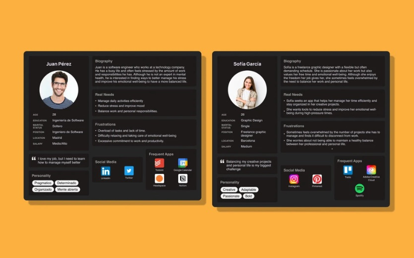
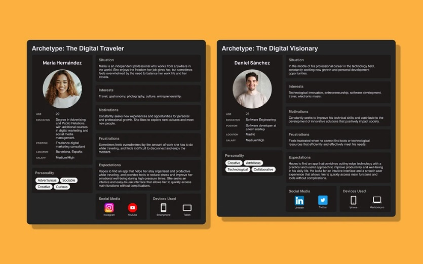
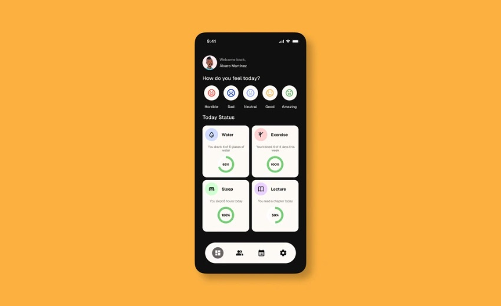
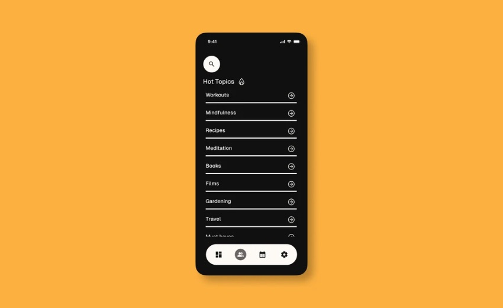

Todoo
Wellbeing for people who are always busy. Bienestar para gente que nunca tiene tiempo.

ContextContexto
There are apps for productivity and apps for fitness. Very few look after how you actually feel.
Hay apps de productividad y apps de deporte. Muy pocas se ocupan de cómo te sientes de verdad.
Work stress and a poor work–life balance are common among professionals. Todoo brings habit tracking, mood and stress logging and a supportive community into one calm, personal space.
El estrés laboral y la falta de equilibrio entre trabajo y vida personal son habituales entre profesionales. Todoo reúne el seguimiento de hábitos, el registro de ánimo y estrés y una comunidad de apoyo en un espacio tranquilo y personal.
ProblemProblema
Busy people struggle to manage stress and emotional wellbeing because the tools are scattered. Most apps focus on productivity or physical health and rarely treat mental and emotional wellbeing as a whole.
A la gente con poco tiempo le cuesta gestionar el estrés y su bienestar emocional porque las herramientas están dispersas. La mayoría de apps se centran en productividad o salud física y rara vez tratan el bienestar mental y emocional en conjunto.
ProcessProceso
- EmpathiseEmpatizar
Surveys and interviews about stress and wellbeing. Personalisation, ease of use and community came up again and again.
Encuestas y entrevistas sobre estrés y bienestar. La personalización, la facilidad de uso y la comunidad aparecían una y otra vez.
- DefineDefinir
Three problems: keeping healthy habits, having tools for stress, and missing emotional support.
Tres problemas: mantener hábitos saludables, tener herramientas para el estrés y no contar con apoyo emocional.
- IdeateIdear
Prioritised habit tracking, mood and stress logging, and an active community.
Se priorizaron el seguimiento de hábitos, el registro de ánimo y estrés y una comunidad activa.
- PrototypePrototipar
Low-fi prototypes of a wellbeing dashboard, activity calendar and personalisation options.
Prototipos de baja fidelidad del dashboard de bienestar, el calendario de actividad y las opciones de personalización.
- Test
Tests with real users, then adjustments to make the experience more intuitive.
Tests con usuarios reales y ajustes para que la experiencia fuera más intuitiva.
Research
Most respondents were between 16 and 34, and they were clearly worried about both their mental and physical health. Interviews showed that an intuitive interface and personalisation would decide whether they kept using the app.
La mayoría de encuestados tenía entre 16 y 34 años y mostraba una preocupación clara por su salud mental y física. Las entrevistas mostraron que una interfaz intuitiva y la personalización decidirían si seguían usando la app.


SolutionSolución
The home screen opens with a single question: how do you feel today? Below it, a daily status for water, exercise, sleep and reading shows progress without pressure. Topics, a calendar and self-care reminders complete a holistic view.
La pantalla de inicio empieza con una sola pregunta: ¿cómo te sientes hoy? Debajo, el estado del día en agua, ejercicio, sueño y lectura muestra el progreso sin presión. Temas, un calendario y recordatorios de autocuidado completan una visión global.


TakeawaysAprendizajes
This project taught me how much empathy shapes design, especially when the subject is mental health. A user-centred approach led to a product that feels supportive rather than demanding, and that changed how I think about wellbeing in tech products.
Este proyecto me enseñó cuánto influye la empatía en el diseño, sobre todo cuando el tema es la salud mental. Un enfoque centrado en el usuario dio como resultado un producto que acompaña en lugar de exigir, y cambió mi forma de pensar el bienestar en productos tecnológicos.